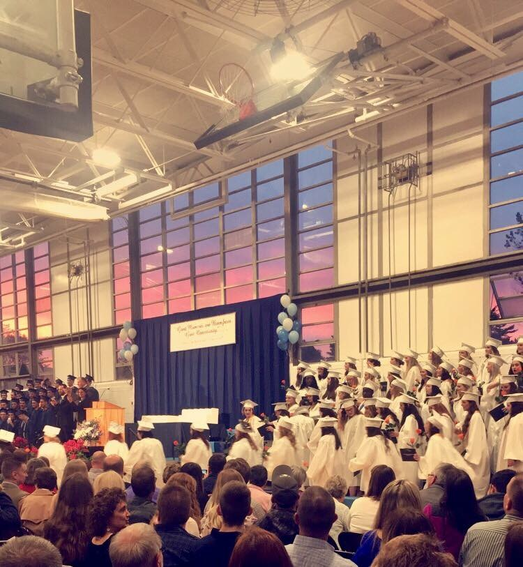

I went to PenBay Christian School for preschool and that was a two year program. That's where I met my childhood and current best friend who lived right across the road from me. After graduating there I went to Cushing Community School kindergarden to 4th grade. I loved each and everyone of my teachers and my class only had give or take 15 kids. Growing up in such a small, close community I knew and became best friends with like everyone in my class. Going to Thomaston Grammar School was a big step for my class and I because that meant combining with the neiboring town.
